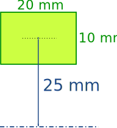
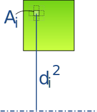
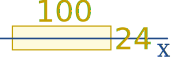
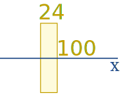
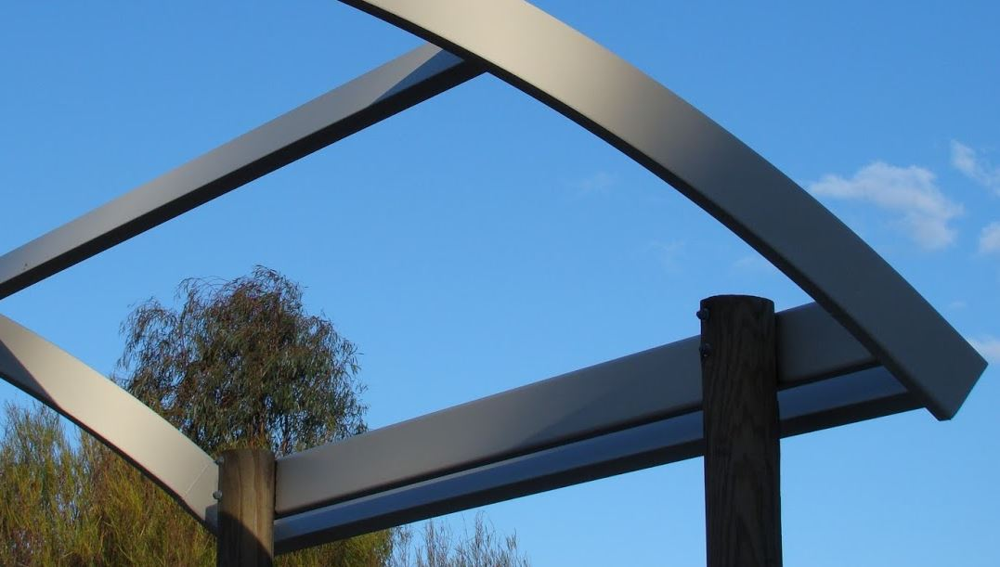
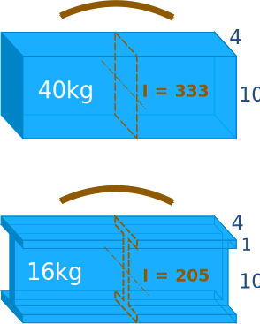
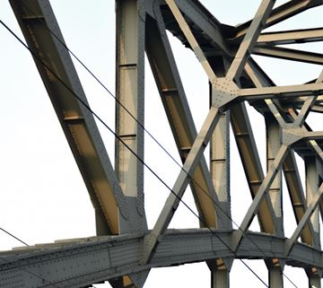

Moments of Area
First and Second Moment of Area
Moment in Physics
In Physics Moment (or Torque) is force times distance:

But there are other Moments, read on!
First Moment of Area
First Moment of Area is area times distance (to some reference line):

First Moment of Area = A x d
For this simple case we can multiply the whole area by the distance (from its middle to the reference line).
Example:

Area is 20 mm x 10 mm = 200 mm2
First Moment of Area (relative to the bottom line) = 200 mm2 x 25 mm = 5000 mm3
(Note the unit is mm3, but is not a volume!)
One of it's great uses is to find the centroid , which is the average position of all the points of an object:

A plane shape cut from a piece of card will balance perfectly on its centroid.
To find the distance to the centroid from any axis, we divide the First Moment of Area by the Total Area:
When we do that for both the x-axis and y-axis we get the centroid.
We can estimate where the centroid is using squares:
Second Moment of Area
For the Second Moment of Area we multiply the area by the distance squared:

(need infinitely many tiny squares)
But be careful! We need to multiply every tiny bit of area by its distance squared, because area further away has a bigger effect (due to the distance being squared).
It is called "Second" moment because we square the distance "x2"
It is also called the area moment of inertia.
We can estimate the second moment using squares, but it is very inaccurate:
We can use the x-axis or y-axis as the reference line, or we can use the centroid for the reference line. You can try that option above.
Notation: The symbol is an "I" followed by a little "x" or "y" for the reference axis.
Ix is in relation to the x axis (and we use y distances times area)
Iy is in relation to the y axis (and we use x distances times area)
The letter I refers to Inertia in "area moment of inertia".
Where possible use an accurate formula such as:
Iy = b3h3
Iy = b3h12
Iy = b3h+b2ha+bha212
Iy = πr44
Engineers use the second moment of area to work out how rigid (hard to bend) a beam is.
Example: A beam that is 100 mm by 24 mm
Lying flat it looks like this:

Ix = bh312 = 100 × 24312 = 115,200 mm4
But sitting upright it is:

Ix = bh312 = 24 × 100312 = 2,000,000 mm4
It is nearly 20 times as rigid sitting upright!
And that is why beams sit up like this:

Try bending a ruler about each axis to experience it for yourself:

Engineers Love I-Beams
Here we have two equal-sized beams, but one is solid, the other shaped like an "I"

The solid beam is a bit stiffer against bending (Ix = 333 vs 205) but very much heavier (40kg vs 16kg).
In practice we could have a slightly bigger I-Beam and still save a lot of money in steel, transport and handling.
